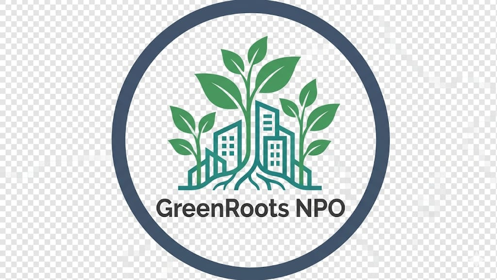
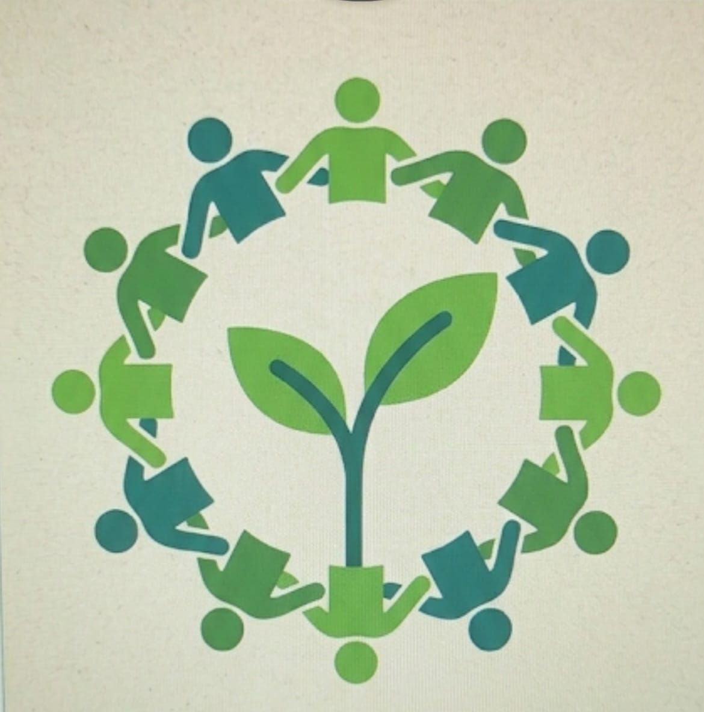

New Garden Opened in Soweto
March 2026 — Our 12th community garden officially opened in Soweto, serving over 400 local families with fresh vegetables year-round.
Read More
GreenRoots NPO.jpeg)
GreenRoots NPO transforms underutilised urban spaces into thriving community gardens across Johannesburg. We educate, empower, and connect communities through sustainable gardening.
Volunteer With Us Learn More
We establish and maintain community gardens in urban areas, providing fresh produce and green safe havens for local residents.

Our workshops and school programmes teach sustainable farming, composting, and ecological responsibility to all age groups.

We empower individuals with skills in urban farming, food security planning, and environmental stewardship for sustainable futures.
Active Gardens
Community Members Reached
Volunteers
Years of Service
March 2026 — Our 12th community garden officially opened in Soweto, serving over 400 local families with fresh vegetables year-round.
Read More
April 2026 — Join our free composting workshop series every Saturday. Learn how to turn kitchen waste into rich garden compost.
Find Out More
We are looking for passionate volunteers to join our weekend garden maintenance teams across all 12 sites.
Volunteer Now